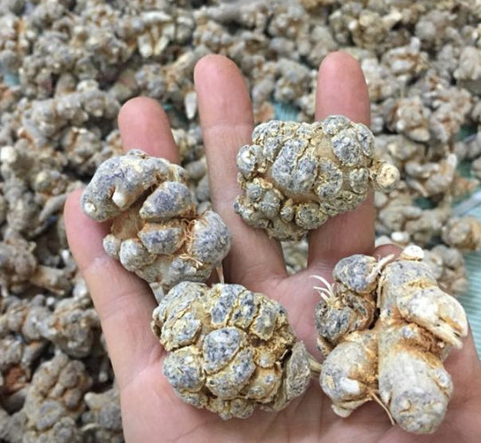

Củ Tam Thất Có Tác Dụng Gì? Những Điều Cần Biết Về Củ Tam Thất¶
Meta description: Ngoài kết hợp với các loại thảo dược khác trong Đông y, tam thất còn được sử dụng trong Tây y. Cùng tìm hiểu xem củ tam thất có tác dụng gì qua bài viết.
Từ lâu, tam thất là loại dược liệu được biết đến với tác dụng cầm máu và bổ huyết. Ngoài việc kết hợp với các loại thảo dược khác trong y học cổ truyền thì củ tam thất còn được sử dụng trong y học hiện đại. Vì vậy, hãy cùng Thảo Mộc HHT tìm hiểu xem củ tam thất có tác dụng gì qua bài viết dưới đây nhé.
1. Củ tam thất có tác dụng gì?¶
Trong đông y, tam thất còn được xem là một loại dược liệu quý. Mỗi một bộ phận của cây tam thất đều mang lại nhiều công dụng tốt cho sức khỏe. Ngoài công dụng cầm máu và bổ khí huyết thì có khá nhiều người thắc mắc không biết củ tam thất có tác dụng gì khác.
Tam thất có nhiều công dụng chính, cụ thể như:¶
Cầm máu, bổ huyết:¶
Củ tam thất có vị đắng ngọt, tính ôn vào cơ thể thì quy vào 2 kinh là Can và Vị. Chính vì công dụng cầm máu, giảm viêm sưng này mà củ tam thất còn được sử dụng trong những trường hợp bị chảy máu hoặc tiêu ứ máu (có thể do phẫu thuật, va đập,…).
Văn bản thay thế: củ tam thất có tác dụng gì Tiêu đề, mô tả: củ tam thất có tác dụng gì Chú thích: Củ tam thất có tác dụng gì?
Bảo vệ mạch máu não và tránh xơ vữa động mạch¶
Với công dụng từ chất noto ginsenosid tiết ra, tam thất giúp giãn mạch, ngăn ngừa chứng xơ vữa động mạch đồng thời ức chế sự thẩm thấu của mao mạch. Bên cạnh đó, tam thất còn có thêm tác dụng hạn chế những tổn thương ở phần vỏ não do thiếu máu.
Lưu thông tuần hoàn máu¶
Ngoài ra, theo tư liệu từ nước ngoài, củ tam thất có thể dùng để hỗ trợ lưu thông tuần hoàn máu, giảm lượng Cholesterol có trong máu. Giúp cho phụ nữ sau sinh không bị ra huyết hôi. Dùng cho người thiếu máu nặng, mệt mỏi, huyết áp cao, hoa mắt, chóng mặt, đái tháo đường, viêm khớp xương,…
Tiêu u, nhất là u lành tính, và cả u ác tính¶
Số lượng người Việt mắc các loại u ngày càng tăng, cả u lành tính và ác tính. Hiện nay, giới Y học nhận định vẫn chưa rõ nguyên nhân hình thành các loại u này. Tuy nhiên, loại u lành tính phát triển là do người mắc bị stress hay căng thẳng kéo dài, do yếu tố di truyền, chấn thương, chế độ ăn uống không khoa học,…
Dù không ảnh hưởng về tính mạng ngay lập tức nhưng các loại u này tiềm ẩn nhiều nguy cơ cho người mắc. Trong khi đó, củ tam thất có khả năng tiêu u, nhất là các loại u lành tính. Việc dùng củ tam thất để “chia tay” nỗi lo về u là việc làm thông minh mà nhiều người đã làm.
Liều lượng và cách dùng tam thất¶
Ngoài việc tìm hiểu củ tam thất có tác dụng gì thì liều lượng và cách dùng cũng được rất nhiều người quan tâm. Tam thất được điều chế để dùng dưới dạng thuốc sắc và bột.
Theo như Dược điển Việt Nam, tam thất có liều lượng dùng từ 10 - 15 g mỗi ngày. Còn theo tài liệu nước ngoài, cụ thể liều dùng được ghi từ 16-20g/ngày.
Đối với những bệnh nhân bị ung thư, liều dùng có phần đặc biệt hơn khi mỗi ngày có từ 4 đến 5 lần uống, mỗi lần dùng từ 4-10g. Để chữa bệnh ung thư, tam thất được thái thành lát nhỏ để ngậm và nuốt hoặc dùng 01 thìa nhỏ bột tam thất hòa với nước lọc.
Văn bản thay thế: Thảo Mộc HHT Tiêu đề, mô tả: ăn củ tam thất có tác dụng gì Chú thích: Liều lượng và cách dùng tam thất
Củ tam thất có những loại nào?¶
Để trả lời cho câu hỏi củ tam thất có tác dụng gì thì bạn cần phải biết các loại tam thất. Vì mỗi loại tam thất sẽ mang lại một tác dụng khác nhau. Thông thường, tam thất được phân biệt dựa vào hình dáng của cây hoặc củ, giá trị, cách phân bố và hình thái khi sử dụng.
Củ tam thất bắc¶
Tam thất bắc hay còn được gọi là sâm tam thất hay kim bất hoán. Đây là loại thảo dược thuộc họ nhân sâm, sống lâu năm (khoảng 3 - 7 năm mới có cho ra củ). Tam thất bắc có đặc điểm hình dạng khá dễ phân biệt khi mà thân cây nó khá nhỏ, cao khoảng từ 30 đến 60cm.. Củ tam thất cũng được phân biệt dựa vào hình dáng bên ngoài, cụ thể như: củ có dạng hình thoi, vỏ ngoài khá sần sùi và có nhiều mấu cứng, củ có màu xám hoặc đen.
Văn bản thay thế: ăn củ tam thất Tiêu đề, mô tả: ăn củ tam thất có tác dụng gì Chú thích: Củ tam thất có những loại nào?
Củ tam thất nam¶
Tam thất nam còn được biết đến với cái tên khổ tam thất hoặc khương tam thất. Củ tam thất nam có dạng hình tròn, bề mặt cũ nhẵn chứ không sần sùi như tam thất bắc. Cây tam thất nam thường mọc ở những nơi ẩm ướt như bờ suối hoặc ven sông, lá cây khá to và dày, mọc xếp chồng lên nhau.
Củ tam thất rừng - Tam thất hoang¶
Hay còn gọi là trúc tiết nhân sâm. Cây tam thất rừng là loại thảo dược ưa mọc hoang ở những nơi khá ẩm như ven núi, ven sông. Tam thất rừng có đến 5 loại khác nhau, để phân biệt chúng cần phải dựa vào màu sắc của lõi củ tam thất: màu tím, màu vàng, màu đỏ tía, màu xanh và màu trắng.
Củ tam thất tươi
Đây là loại củ tam thất chưa qua điều chế hay bảo quản mà vừa mới thu hoạch nên được đánh giá là có giá trị dược tính cao. Tuy nhiên, nếu không biết cách bảo quản thì củ tam thất rất dễ bị hỏng.
Củ tam thất khô Là loại củ tam thất đã qua quá trình sơ chế hoặc sấy khô. Nếu biết cách sơ chế và bảo quản thì giá trị dược tính của củ tam thất khô cũng không thua kém so với củ tam thất tươi.
>>> Xem thêm:
-------------
Mua củ tam thất Bắc ở đâu uy tín và chính hãng?¶
Bên cạnh việc tìm kiếm câu trả lời về vấn đề ăn củ tam thất có tác dụng gì thì việc mua củ tam thất chính hãng ở đâu cũng là câu hỏi chung của rất nhiều người dùng. Là loại thảo dược mang lại nhiều công dụng và khá phổ biến. Chính vì vậy mà trên thị trường hiện nay có rất nhiều địa điểm bán củ tam thất.
Bạn có thể tìm mua ở các hiệu thuốc hoặc phòng khám y học cổ truyền. Thảo Mộc HHT cũng là một trong những địa điểm bán củ tam thất uy tín được lượng lớn khách hàng tin tưởng và sử dụng. Tại Thảo Mộc HHT bạn có thể hoàn toàn yên tâm về chất lượng sản phẩm bởi mỗi một sản phẩm ở đây đều có giấy chứng nhận nguồn gốc xuất xứ.
Văn bản thay thế: ăn tam thất có tác dụng gì Tiêu đề, mô tả: ăn củ tam thất có tác dụng gì Chú thích: Mua củ tam thất Bắc ở đâu uy tín và chính hãng
Củ tam thất có giá như thế nào?¶
Giá của củ tam thất còn phụ thuộc vào chủng loại, số lượng, kích thước cũng như năm tuổi mà hình thành. Cụ thể như:
Củ tam thất bắc loại 1kg có 100 củ thì sẽ có giá khoảng 1.200.000VND.
Củ tam thất bắc loại 1kg có 50 củ thì sẽ có giá đắt hơn với khoảng 1.500.000VND.
Nụ hoa tam thất loại 1 có giá khoảng 900.000VND
Trên đây là những thông tin chi tiết nhằm giải đáp thắc mắc về vấn đề củ tam thất có tác dụng gì. Mong rằng với những thông tin trên, bạn có thể hiểu rõ hơn về công dụng cũng như tìm được cho mình địa điểm mua tam thất uy tín.
>>> Tham khảo ngay:
Meta title: Củ Tam Thất Có Tác Dụng Gì? Những Điều Cần Biết Về Củ Tam Thất
Meta description: Ngoài kết hợp với các loại thảo dược khác trong Đông y, tam thất còn được sử dụng trong Tây y. Cùng tìm hiểu xem củ tam thất có tác dụng gì qua bài viết.
Note
Liên hệ Hà Toại - Điện thoại: 0964.421.551
#trích nguồn từ internet